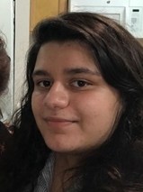

Vanessa Böhm
Astrophysics, Machine Learning and More
I'm a postdoctoral researcher at the Berkeley Center for Cosmological Physics at UC Berkeley with expertise in machine learning, simulation-based data analysis and Bayesian inference. In my research I develop and apply data analysis techniques that can extract relevant physics from the large, high-dimensional and non-Gaussian data provided by modern astrophysical experiments.
Apart from my work in astrophysics, I am also broadly interested in solving challenging data analysis problems in other domains. In spring of 2020, collaborators and I used machine learning to provide one of the earliest and at the time most accurate estimates of the fatality rate from COVID-19. Recently, I was part of a two-month, NASA-funded research sprint aimed at developing AI technologies for rapid disaster assessment from space (results to be published soon).
As a researcher at a public university, I am passionate about fostering diversity in the physical sciences, transforming the field to become more inclusive, and empowering young researchers from all backgrounds to reach their full potential. In my mentoring and collaborations I strive to create work environments in which everyone feels heard and valued.
Updates & Announcements
Lectures and Coding Exercises on Probabilistic Machine Learning
The LSSTC Data Science Fellowship Program offers data science training and mentoring to a diverse pool of astrophysics PhD students from all over the world. I had the great pleasure of teaching at one of the program's sessions in March 2022. My lectures covered Variational Autoencoders, Normalizing Flows and their applications to real data. All materials including codes can be found on Github.
Gender Gap in Astronomy widened during COVID
Using publication data, my colleague Jia Liu and I analyzed trends in the productivity of Astrophysicists during the COVID-19 pandemic. We disseminate our results by career-stage, gender and country. We observe an increase in productivity in the last two years compared to previous years, but that this increase is not shared equally between men and women. A decrease in the number of first-time authors indicates barriers for young researchers to enter the field or complete their first projects.
This section was last updated on April 13, 2022.
Research
I am an expert in simulation-based Bayesian inference. This means I use numerical data models and posterior analysis to probabilistically recover underlying signals from observed data. Solving such Bayesian inverse problems is particularly challenging in high-dimensional and non-linear settings. I tackle these settings with special optimization and sampling algorithms that require taking derivatives of entire data simulations with respect to the signal of interest. To enable a fast and accurate computation of these derivatives, even for complex data simulations, I develop highly parallelizable and automatically differentiable simulation codes.
The second major pillar of my research involves designing and applying machine learning frameworks for scientific data analysis. The methods I develop exploit the powers of machine learning and deep neural networks while meeting the needs of the scientific community: reliable uncertainty estimation, little fine-tuning and fast and easy training. My latest algorithms can be used for accurate anomaly detection, posterior analysis in high dimensions and artificial data generation. Browse my recent publications to learn more.
Recent Publications

MADLens, fully differentiable lensing simulations
MADLens is a python package that does not only produce accurate non-Gaussian lensing maps at low computational cost, it is also fully differentiable with respect to cosmological parameters and the initial density field.

Probabilistic Auto-Encoder (PAE)
The PAE is an easy-to-train deep generative model that produces state-of-the art results in sample quality and outlier detection accuracy.
Deep Uncertainty Quantification (Deep UQ)
Deep UQ makes high dimensional posterior analysis tractable by combining traditional posterior analysis with machine learning.

Estimating the true fatality rate of COVID-19
A sophisticated time series analysis of Italian mortality data allowed us to accurately infer the fatality rate from COVID-19 shortly after the pandemic had begun. Since then many other publications have confirmed our findings.
Code
I am committed to making all of my codes user-friendly, well documented and publicly available under creative common licenses. All of my codes are hosted on GitHub. Feel free to contact me for support or to report bugs.
Students
I offer research projects to students of all levels and typically mentor 2-3 students at a time.
Students who are interested in research projects at the intersection of ML and (astro-)physics are welcome to contact me. My research projects are generally coding-heavy and basic programming experience is recommended. For paid research opportunities, I encourage undergraduate students and especially transfer students at Berkeley to apply to the N3AS undergraduate research program.
Current Students

Malika Golshan
Malika is a fourth-year undergraduate student pursuing a major in Physics.
Project: Can AI reliably learn neutrino physics from N-body simulations?

Max E. Lee
Max is a UC Berkeley graduate and about to begin his PhD studies at Columbia University.
Project: Optimal extraction of cosmological parameters from weak gravitational lensing data
Contact
Campbell Hall 341
University of California
Berkeley, CA 94720

{kind=link}